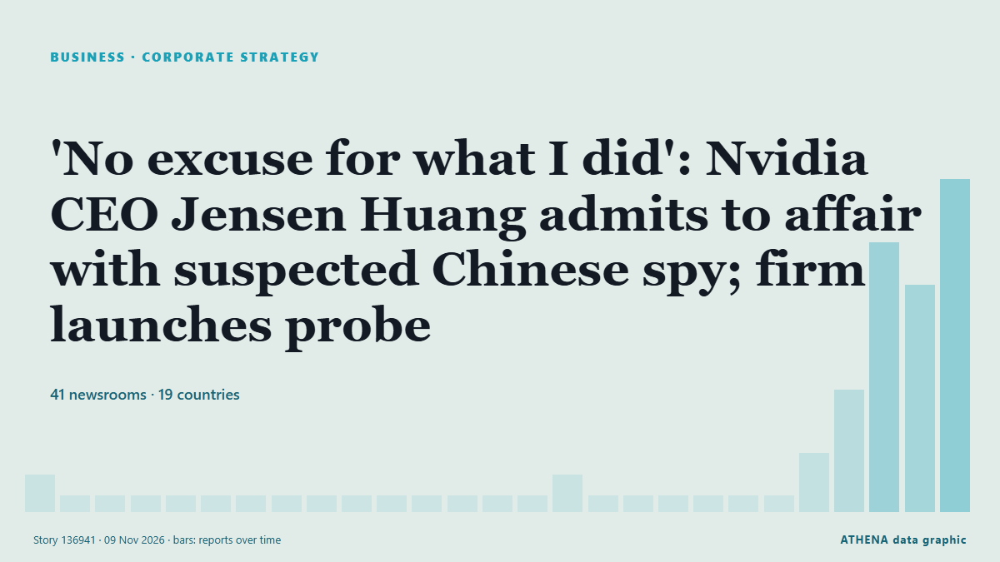

Εταιρική στρατηγική
ΧορηγούμενοΠαρουσιάζεται από  Cybernetics and Artificial Intelligence Lab Welcome to the Cybernetics and Artificial Intelligence Laboratory, established at the Department of Business Administration of the National and Kapodistrian University of Athens. The lab is headed by Professor Dimitrios Thomakos. The lab aims to do research that can be published in top venues. Our research uses tools and methods of Artificial Intelligence, and lies in the following areas: - Forecasting - Decision making - Cyber security - Finance We are always looking forward to collaborating with exceptional students!
Cybernetics and Artificial Intelligence Lab Welcome to the Cybernetics and Artificial Intelligence Laboratory, established at the Department of Business Administration of the National and Kapodistrian University of Athens. The lab is headed by Professor Dimitrios Thomakos. The lab aims to do research that can be published in top venues. Our research uses tools and methods of Artificial Intelligence, and lies in the following areas: - Forecasting - Decision making - Cyber security - Finance We are always looking forward to collaborating with exceptional students!
| 27 Οκτ | 0 |
|---|---|
| 28 Οκτ | 0 |
| 29 Οκτ | 0 |
| 30 Οκτ | 0 |
| 31 Οκτ | 0 |
| 1 Νοε | 0 |
| 2 Νοε | 0 |
| 3 Νοε | 0 |
| 4 Νοε | 1 |
| 5 Νοε | 8 |
| 6 Νοε | 7 |
| 7 Νοε | 3 |
| 8 Νοε | 4 |
| 9 Νοε | 1 |
Οι τίτλοι των ειδήσεων παρουσιάζονται στα αγγλικά, όπως δημοσιεύτηκαν.

'No excuse for what I did': Nvidia CEO Jensen Huang admits to affair with suspected Chinese spy; firm launches probe
Nvidia CEO Jensen Huang has admitted to having a close relationship with a suspected Chinese spy in an email to his employees. από Deccan Herald
Jennifer Welch & Angie Sullivan Apologize For Laughing At “Insensitive” Charlie Kirk Joke On Podcast: “We Regret It”
After losing several advertisers, the hosts of the I’ve Had It podcast have apologized for making light of Charlie Kirk’s killing. από Deadline
Big on Savings, Big on Happy with Cebu Pacific’s 11.11 Seat Sale
Fares as Low as SGD 117 MANILA, Philippines, Nov. από Laotian Times
Spanish companies plan district heating networks powered by data center waste heat
Ignis and Rebi are exploring the development of district heating networks using waste heat from data centers. από pv magazine
Man collapses, dies while climbing Deviramma Betta in Chikkamagaluru
Chikkamagaluru: A 35 year old man from Dakshina Kannada collapsed and died while climbing Deviramma Betta in Chikkamagaluru on Sunday. από Deccan Herald
Britons drive sales of radios, cassettes and CDs to cut screen time – report
A report by electronics brands Pure and TEAC said consumers wanted to enjoy music ‘without constant notifications and endless scrolling’. από Evening Standard (London)
Russia Strikes Central Ukraine Naftogaz Facility 3 Times
Russian forces carried out three consecutive strikes against a Naftogaz oil and gas facility in central Ukraine overnight into Saturday, Nov. από Kyiv Post
Neymar's father appointed Santos FC CEO
Brazilian club Santos FC said on Friday it had appointed Neymar’s father and agent, Neymar Sr., as its CEO. από Business Recorder
Ghana loses $6.5bn in potential mining revenue – IFS
The country loses an estimated $6.56 billion in potential revenue from the mining sector every year due to the government’s limited participation in mineral extraction, the Institute for Fiscal… από MyJoyOnline
New York Times In Advanced Talks To Buy Letterboxd For Reported $330 Million
The New York Times Company is in advanced talks to acquire the beloved cinephile social media platform Letterboxd, Deadline has confirmed. από Deadline
UP CEO’s rate threat adds wrinkle to Norfolk Southern merger process
The railroad said Jim Vena’s remarks that he would raise rates on shippers who oppose the merger was an “offhand comment.” από Supply Chain Dive
Banner appears outside hotel at former PCI HQ, 'your profit cannot erase our history'
(ANSA) - ROME, 06 NOV - A banner appeared overnight on Via delle Botteghe Oscure, in the heart of Rome, outside the building that once housed the headquarters of the once-powerful Italian Communist… από ANSA English
Channel 4 axes Married At First Sight UK after review following misconduct claims
Channel 4 chief executive Priya Dogra also confirmed season six of the show, which was filmed earlier this year, would not be broadcast. από The Irish News (Belfast)
Hong Kong firms must innovate to compete in mainland China, trade chief says
Hong Kong companies can survive intense competition in mainland China by being innovative and maintaining high standards, the head of the city’s trade promotion body has said. από South China Morning Post
DTE Energy to divest DTE Vantage in $3bn deal
DTE Energy has agreed to sell its non-utility DTE Vantage business to institutional investors in a deal valued at approximately $3bn. από Power Technology
Denmark, Lithuania latest Baltic navies to buy ‘Blocker’ mines through Finnish scheme
Denmark is the latest country to buy Finland’s “Blocker” naval mines, a day after Lithuania decided to go ahead with its own contract for the weapon. από Defense News
Soaring fuel costs hit profit at British Airways owner IAG
British Airways owner IAG has taken a hit to its profit due to “very high” jet fuel prices, which industry bosses have warned could force some airlines into collapse next year. από City A.M.
Nintendo quarterly net profit drops as Switch 2 unit sales slow
TOKYO: Japanese gaming giant Nintendo reported a drop in quarterly net profit on Thursday as unit sales slowed for its Switch 2 console, but maintained its annual forecasts. από Business Recorder
KRA tax collections rise 15.5pc on business rebound
KRA said domestic revenue contributed Sh165.447 billion in October, exceeding its target by... από Business Daily Africa